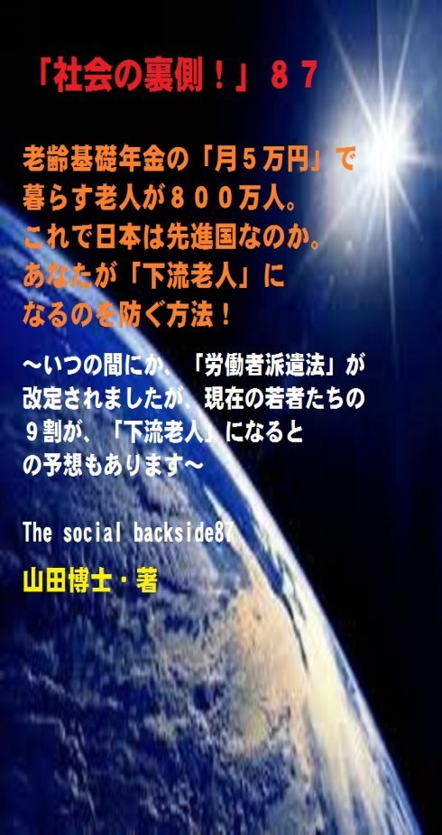

| 「社会の裏側！」８７......老齢基礎年金の「月５万円」で暮らす老人が８００万人。これで日本は先進国なのか。あなたが「下流老人」になるのを防ぐ方法！: いつの間にか、「労働者派遣法」が改定されましたが、現在の若者たちの９割が、「下流老人」になるとの予想もあります | |
| 山田博士 | |
| kominitesyuppankai (2018) | |

■「社会の裏側！」８７
老齢基礎年金の「月５万円」で暮らす老人が８００万人。これで日本は先進国なのか。あなたが「下流老人」になるのを防ぐ方法！
～いつの間にか、「労働者派遣法」が改定されましたが、現在の若者たちの９割が、「下流老人」になるとの予想もあります～
The social backside87
山田博士・著
★本書の著作権について
皆さんにはまったく関係ないことだと思いますが、複写、転送、抜粋、転載など、著作権侵害にあたる行為は絶対になさらないで下さい。本書の著作権は、山田博士にあります。今後、皆さんのお役に立ちたい活動が出来なくなりますので、その点、ぜひよろしくお願いします。ささささ、それでは、本書をどうぞ、ごゆっくりご覧下さい。
★概要
先に述べておきます。
いま現在、自分は高収入なのだから、老後は大丈夫さ......なんて思っていてはいけません。
もしそう思っているかたがいれば、あなたの老後は悲惨です。
本書の第１章でも述べておきましたが、どんな人であっても、自分の人生の先を完全に見通すことなどできないわけですね。
そこで述べておいた例では、しょっちゅう、日本とヨーロッパを往復するような生活をしていた人でさえ、老後にこんな生活が待っていたわけですが、こんなことは、まさか自分も他人も、誰も思ったりしませんでした。
まあ、詳しくは本書をご覧いただくことにして、いま、先進国と呼ばれる日本国内で、「下流老人」という人たちが、およそ６００万人から８００万人もいます（厚労省による）。
この「下流老人」とは、生活保護を受ける生活レベルで暮らす高齢者、およびそうなる恐れのある高齢者のこと......なんですが、じつは、驚かないで下さい。
けっして冗談じゃなく、いまの若者が高齢者になる３０年～４０年後には、その９割ほどがこの「下流老人」になると予想されているんですね（詳しくは本書をご覧下さい。凄まじい現実が、いま現在進行形なんです）。
ところが、あろうことか、このたび、いま以上に事態を深刻化させることになる「労働者派遣法改正案」なるものが成立・施行されました。
これは「非正規社員」だけを増やすことにつながり、若い層の将来が非常に心配です。
そのことにも、本書では触れました。
それでは、ぼくたち自身が可能なことは何なのか。
社会の問題を一つずつ改善して行く運動は大切ですが、それと併行して、自分自身でも経費を抑（おさ）え、しかも健康になる方法を、ぜひ続けてほしい。
それについても、最後に述べておきました。
ぜひ本書をいつも携（たずさ）えて、これからやってくる少子高齢化時代を、口笛を吹きながら乗り越えて下さい。
ささささ、どうぞ、ご覧下さい。
★目次
★（第１章）
「まさかこんな生活をするなんて夢にも思っていませんでした。夕食のメニューが減ったのを見て、認知症の夫が"なんでこんなに少ないんだ"と怒り出したのを見て、涙が出ました......」
★（第２章）
現在、およそ６００万人～８００万人の人が、「下流老人」と呼ばれております。もはや、いまの日本には「中流」と言われる人はほとんど存在しなくなり、両極端に別れてしまったわけですね。そのために......
★（第３章）
これは年金生活者も同じこと。なににしろ、老齢基礎年金だけで暮らしているご老人は、全国で８００万人もいることが分かっております。その年金額は、月５万円ほど。これを「下流老人」と言わずして、何を言うべきですか。もう、あ然とするしきゃ、ないじゃありませんか......
★（第４章）
現在、総務省の労働力調査によれば、「派遣社員」は約１１９万人いることになっています！しかも、その中でも、中高年（４５歳～６４歳）の数は、２０１４年平均で３４万人。２００４年の２．４倍にまで膨（ふく）らんでいるんですね。そして、世界中にある「派遣会社」の約７割は、なんと日本にある事実......
★（第５章）
どうすれば、「下流老人」を避けることができるのか。こうすれば、なにしろ老人になっても、食費も少なくてすみますし、医療費も不要になりますし......もう安泰です。もちろん、介護費用など、不要になりますから、経済的にも安心ですよね。つまり......
★「社会の裏側！」シリーズの既刊本案内
★プロフィール
（最初に、恥ずかしながら、ぼくの紹介を簡単に述べておきます）
やまだ・ひろし。
１９４７年、福井県小浜（おばま）市生まれ。
食生態学者。元大学名誉教授。日本危機管理学会会員。
山田博士いのち研究所主宰。
ベトナム戦争の終わったちょうどその年１９７５年に、マンガストーリィと商品の実名で食べものや環境を取り上げた小冊子「暮しの赤信号」を発行する。実名で取り上げたため、社会に衝撃を与えた。各号１０万部単位で読まれ、隠れたベストセラーなどと、新聞などで何度も報道される。
同じ年、偶然にも有吉佐和子さんの「複合汚染」が発表され、この小冊子はその動きも受けて多くの学校の副読本としても活用された。
文化放送の「なっちゃこワイド」や、ＮＨＫ海外放送「ある日本人」でお話しをしたり、ギター弾き語り公演や、各自治体や学校などへの講演なども続けている。
現在は、メルマガ「暮しの赤信号」（「短縮版」と「完全版」の２種）を発行し、企業名や商品名なども公表して、世界中のかたに喜ばれている。
その読者層は、医師や看護師、栄養士、教師、会社経営者、自治体など、国の内外を問わず、多くの読者たちから毎日のように便りが届いている。年齢層も、１０代からかなりの高齢のかたまで、さまざまだ。
このメルマガは、まぐまぐ！を始め３つのスタンドの合計で、７千部発行しているが、もしご関心のあるかたは、ご覧いただくと嬉しい。毎日、早朝５時に届けられる（日曜は除く）。その時刻を楽しみにされている読者も多いとか。
先述したように、メルマガ「暮しの赤信号」には２種類あり、「短縮版」のほうは無料。「完全版」のほうは、山田の思いが１００％掲載されており、社会を見るのに、毎回大いに参考になるだろう。そのほかにもさまざまな特典がある。「短縮版」については、次のアドレスで登録できる（「完全版」は、「短縮版」の中に案内あり）。
■「短縮版」登録（無料）→ http://goo.gl/AFx95J
また、毎月第３土曜日に、東京の恵比寿でお茶飲み会「博々亭（ひろびろてい）」を開催。遠路から毎回読者が駆けつけている。参加条件はメルマガ読者に限定。参加費用は無料だ（８月と１２月はお休み）。
著書に 『脱コンビニ食！』（平凡社新書）
『危険な食品』（宝島社新書）
『その食品はホンモノですか？』（三才ブックス）
『ひとり月１万円食費で幸せ生活』（ＷＡＶＥ出版）
『最新 危ないコンビニ食』（現代書館）
『あぶないコンビニ食』（三一新書）
『続 あぶないコンビニ食』（同）
『外食店健康度ランキング』（同）
『山田博士の暮しの赤信号』第１巻～第５巻（亜紀書房）
『暮しの赤信号』小冊子＆ＣＤ－ＲＯＭ版全２３巻
『月１万少々の食費で、ザクザクと健康を稼ぐぼくの
方法』
『いのち運転"即実践"マニュアル』各話
『社会の裏側！』各巻
（これは、アマゾン発行の電子書籍。ＰＤＦ版でも読
める）
『セーラー服と警察犬』（小説）各巻
『実話・食卓の事件簿』各巻......などがある。
山田のホームページ http://yamadainochi.com/
★はじめに......
こんにちは。
山田博士（やまだ・ひろし）です。
本書をご覧いただき、嬉しく思っております。
この内容をご覧いただくことで、少しでもあなたが「社会の裏側！」の流れにお気づきになり、そしてたとえ１ミリでもいい、即、行動されることを願っております。
ただ読むだけでは、誰でもできます。
それでは、あなたの身の回りの状況は石のように動きません。
本書をご覧になって、これは......と思うことがあれば、即行動なさって下さい。
お願いします。
その小さな行動の積み重ねこそが、あなたの明日を、１２色のバラ色で輝かせることになると信じております。
なお、この「社会の裏側！」は、今後もシリーズとして発刊して行くつもりです。
もしご関心があれば、「社会の裏側！」という名前で、アマゾンで検索してお調べ下さい。
さまざまな問題の社会の裏側！を詳しく、しかも楽しく述べております。
ぼくの名前で検索されても、見つかるのではないかと思います。
もし、「ＰＤＦ版」でご希望の場合は、ぼくの事務局まで遠慮なくお問い合わせ下さい。事務局→ http://goo.gl/t12Yx
ささささ、能書きはそこまでにします。
どうぞ、笑顔で、頁をお繰（く）り下さい。
お楽しみに！
山田博士
★（第１章）
「まさかこんな生活をするなんて夢にも思っていませんでした。夕食のメニューが減ったのを見て、認知症の夫が"なんでこんなに少ないんだ"と怒り出したのを見て、涙が出ました......」
東京都内の閑静な住宅街。
この家の並びに、日が暮れても「明かりが灯（とも）らない」洋館風の一戸建てがあります。
この家に住むのは、７２歳の夫と６８歳の妻。
まだまだ老人というには若い二人です。
家の灯りが灯らない理由は、余裕がなく、「電気代がもったいないから......」。
そのため、夜も消灯を......ずっと続けているわけなんですね。
いったい、この夫婦に、何があったのか。
夫は、３０代から外資系コンサルに勤め、日本とヨーロッパを往復する生活を送ってきました。
もちろん、それなりに収入はあったことでしょう。
そして、５２歳で独立。
子どもはいないけれど都内に庭付きの一戸建て住宅を持ち、夫婦の老後はもう安泰（あんたい）のはずだった......と言います。
ところが......。
いったい彼らの身に、何が起こったのか。
じつは、夫が５８歳のとき、脳梗塞（のうこうそく）を発症したというわけですね。
そのため、突然、仕事が出来なくなり、現在もその後遺症のために、そのマヒと認知症などで、この年齢で「要介護」状態になったわけです。
人間、突然に倒れることは、誰しも起こりえます。
みんな生身（なまみ）の人間ですからね。
どれだけ食べものにふだん気を付けていても、事故、災害、それに過労......。
さまざまな要因が、ぼくたちの周囲にはたくさん溢（あふ）れております。
かく言う、ぼくだって、明日、どうなっているか分からない。
明日には、こうしてメルマガの文章を書くこともできず、読者の会「博々亭（ひろびろてい）」で、皆さんとおしゃべりもできないかもしれない。
そう、どのような人でも起こりえます。
あなたも、そうです。
とくに、将来が保障されていない民間の企業や自営業者で、若いときから一所懸命活動をしてきた人ほど、そうかもしれません。
なにしろ、自分の体を限界まで酷使（こくし）しますからね。
そして気がついたときは、倒れている......。
この男性は、海外勤務のとき、年金未加入期間があったなどで、年金の受給額がかなり少なくなりました。
そして、それまでの貯蓄は、医療費や介護費、それに老朽化した建物のリフォームなどで、次々と消えて行き、１年ほど前に底をついた......と言います。
妻は、毎日、夕方ごろにスーパーに行って、店員さんが食材に５割引のシールを貼るまでじっと待っている。
もちろん、暑い夏であっても、クーラーはほとんど使用しません。
「まさかこんな生活をするなんて夢にも思っていませんでした。夕食のメニューが減ったのを見て、認知症の夫が"なんでこんなに少ないんだ"と怒り出したのを見て、涙が出ました......」
「あとは自宅を手放すしかないのですが、それでも夫を連れて介護施設に入居するお金などありませんし、受け入れてくれる賃貸もない...。本当に先が見えないんです......」（出所：「女性セブン」 2015年9月17日号」）。
いやあ、凄（すさ）まじい暮らしぶりですよね。
まあ、いま述べました夫婦は、老人と言っても、６０代～７０代という、まだまだ「若い老人」です。
体力もある。
しかも持ち家もある。
だけど、世の中には、本当の老人たちで、もっともっと苦しんでいるかたが、この日本にはたくさんいらっしゃるわけですね。
最近は、そのかたたちを、「下流老人」と呼ぶらしいですが、この「下流老人」たちが、じつは将来の皆さんの未来像にダブっているとしたら......。
大変なことです。
それについて、下記で少しばかり......。
★（第２章）
現在、およそ６００万人～８００万人の人が、「下流老人」と呼ばれております。もはや、いまの日本には「中流」と言われる人はほとんど存在しなくなり、両極端に別れてしまったわけですね。そのために......
この「下流老人」という言葉を初めて作ったかたによれば......この「下流老人とは、生活保護を受ける生活レベルで暮らす高齢者、およびそうなる恐れのある高齢者のこと」......のようです。
いったい、この日本に、何人ぐらいのかたがそう呼ばれるのか。
現在もどんどん増えてきているのですが、その数は、およそ６００万人～８００万人とも。
ぼくが若いころは、本当かどうかは知りませんが、日本には「中流」と言われる人たちが多くいて、そのような人が働き、そして消費していたからこそ、日本は活力があり、経済力が伸びたんだと聞かされていました。
まあ、政府や企業がそう叫んでいたに過ぎなかったのでしょうがね。
でも、そう聞かされていたぼくたちは、「将来は、きっとバラ色の未来が来る」と信じていました(笑)。
そうでも思わなければ、とてもやってはおれませんでしたしね。
狭いウサギ小屋に住み、満員電車に押し込まれて片道１時間半ほども揺られて、毎日、職場へ通っていた身には、そのような「夢」を抱いていることが、唯一の希望だったのです。
でも、いま。
そのような中途半端の、いわゆる「中流」だと思う人さえ、どこを探しても見つかりません。
いまは、ほんの一握りの富裕層と、そして大多数の貧困層がいる......というのが、実態となりました。
しかも、少子化と高齢化がグングンと進み、若者たちはいまは元気かもしれませんが、誰でも「必ず」高齢者になります。
それは、ある日突然、やってくるんですね。
「あれれれ......こ、こんなことはないはずなのに......」
と、「自分が老人になった」と自覚するときが必ず、誰にもあります。
だけど、非正規の低賃金で働いていれば、いったいそのとき、誰に頼ればいいのか。
人は生きるためには、食費、住居費、光熱費、衣服費、教育費、それに病気になれば高額な医療費などが絶対に必要になります。
これらは、待ったなしなんですね。
だから、冗談じゃなく、いまの若者が高齢者になる３０年～４０年後、その９割ほどがこの「●●」になると、予想されています（●●は下記の設問を）。
現に、この「下流老人」という言葉を作ったかたは、そう言っておられます。
これは、由々しき問題じゃありませんか。
もし子どもがいなければ、子どもをアテにすることもできない。いやいや、結婚していなければ、配偶者もいない。
まったくの一人となります。
もちろん、そのころには、親もかなりの高齢者になっていますし、あるいはもう、この世に存在していないかもしれません。
その新しい「下流老人」の面倒を......誰が見るわけです？
それなのに、いま若い世代は高齢者を非難し、高齢者は若者を非難している。
そんなことをして、誰が喜びますか。
いつの世も、支配者たちは、庶民を分断することによって、自分の地位を安泰にしてきました。
そう、「庶民たち同士に格差を付けて、互いを争わせる」わけですね。
江戸時代もそうでした。
士農工商の下部に、さらに階層を置き、自分はまだそこまで「落ちてはいない......」と、慰めるわけです。
そして、「下部の階層同士」で争わせるわけですね。
こうすれば、いつの世も、支配者たちは安泰です。
古今東西、どこでも、同様のことがありました。
いまの北朝鮮や韓国が、日本を敵視するのも、これと同じかもね......(笑)。
そうすれば、人々の目は外を向いて、支配者たちの横暴さが見えなくなります。
いやあ、うまいこと、考えますね。
だから、ぼくたちは、「老人を敵視しては」いけない。
絶対、ダメです。
だって、老人とは、ぼくたちがこれから「歩いて行く姿」なんですね。逆に、子どもたちは、あなたが過去に「歩いてきた姿」なんです。
だから、恵まれた一部の老人たちを見るだけで、すべての老人たちを同様に責めても仕方ない。
もちろん、一部の老人は恵まれています。
それは分かります。
とくに高級官僚だったような人たちは、自分では肉体労働も、生産的な仕事など何もしていないのに、目の玉が飛び出るような高額な年金で、老後を優雅に過ごしております。
その事実は、ぼくも知っています。
もちろん、それらを変革する必要はありますし、必ず近い将来、そうした歪（ゆが）みは是正（ぜせい）される日が来ることでしょう。
でも、ぼくは思います。
現在のご老人たちは、戦後のあの焼け野原を歯を食いしばって戦い抜いてきた「尊敬すべき存在」です。
ぼくの両親の世代など、戦争中は１０代～２０代、そして敗戦直後は食糧難でした。
父は戦地でさまざまな辛（つら）い体験をし、母は青春時代を勉強もまともにできず、戦後は、３人の子どもを食べさせるために、着物を持って農村へ。
どれだけ苦労したことか。
それらを思うと、とてもいまの老人たちを非難することなど、ぼくにはできません。
それより、過去そうして一所懸命に汗を流してきた人たちが、いま先述したような「下流老人」になって苦しんでいらっしゃる。
そちらのほうにこそ、目を向けたいわけですね。
たとえば、具体的に「下流老人」とは......。
★（第３章）
これは年金生活者も同じこと。なににしろ、老齢基礎年金だけで暮らしているご老人は、全国で８００万人もいることが分かっております。その年金額は、月５万円ほど。これを「下流老人」と言わずして、何を言うべきですか。もう、あ然とするしきゃ、ないじゃありませんか......
たとえば、厚労省の「国民生活基礎調査」というものがあります。
それによりますと、現在、６５歳以上の人たちの貧困率は、１８％。
まあ、５人に１人......となりますか。
この貧困率とはどういうものかと言いますと、年収が１２２万円以下ということで、「生活保護基準」を下回っている場合が貧困ラインとされているようですね。
その割合を指します。
ところが、その「保護基準」さえ、アベ君（阿倍総理大臣のこと）
の時代になってから、次々と引き下げられております。
もちろん、不正支給を得ている人は論外ですが、本当に生活に困っている人たちには、まさに生死の問題なんですね。
たとえば、老齢加算がすでに２００６年に廃止されましたが、２０１３年からは安倍政権のもと、なんと３回も生活扶助（ふじょ）基準が切り下げられ、２０１５年には、住宅扶助や冬期加算額も切り下げられてしまいました。
いやあ、ぼくたちの見えないところで、凄（すご）い仕打ちが始まっているわけですよね。
これら生活保護利用者の、約半分は、高齢者が占めています。
こうした結果、こうした老人たちは、お金の余裕がないため、親戚付き合いなども止め、部屋に閉じこもり、世間や近隣からますます孤立してしまうという塩梅（あんばい）になります。
きっと政府の役人たちは、どこまで削れば、老人が生きていかれるのか、「人体実験」をしているつもりなのでしょう、きっと。
役人たちの自分の老後は、まったく安泰ですからね。
しかも、これは年金生活者も同じこと。
なににしろ、老齢基礎年金だけで暮らしているご老人は、全国で８００万人もいることが分かっております。
その年金額は、月５万円ほどです......。
もう、あ然とするしきゃ、ないじゃありませんか。
一方、役人だっただけで、月何５０万円も６０万円も年金をもらえる老人たちがいる。
これは、まったく逆じゃありませんか。
公僕（こうぼく）である役人であるからこそ、月５万円で暮らしてほしい。
そして、みずから、その金額でいいのかどうか、その辛さを体験してほしいものだと思っております。
しかも、いまの若者たちが、近い将来に、この「下流老人」になった場合、国としてどう対処するのかどうか。
なぜなら、次に述べるように、いまの若者たちの置かれた状況は凄（すさ）まじいわけですね。
だけど、なぜいま、若者をこれほどいじめるわけです？
ぼくは、若い人が大好きなので、とても許せません。
つまり......。
★（第４章）
現在、総務省の労働力調査によれば、「派遣社員」は約１１９万人いることになっています！しかも、その中でも、中高年（４５歳～６４歳）の数は、２０１４年平均で３４万人。２００４年の２．４倍にまで膨（ふく）らんでいるんですね。そして、世界中にある「派遣会社」の約７割は、なんと日本にある事実......
つまり、いまの社会、以前と比べて、「派遣社員」がどんどん増えているわけですね。
下記については、いつだったかも、この欄で述べたのですが、再度、声を大にして、述べてみることにします(笑)。
現在、総務省の労働力調査によれば、「派遣社員」は約１１９万人いることになっています！
しかも、その中でも、中高年（４５歳～６４歳）の数は、２０１４年平均で３４万人にもなっていて、２００４年のなんと、２．４倍にまで膨（ふく）らんでいるんですね。
つまり、「派遣社員」全体の３割（３４万人！）が、この中高年となっています。
いつから、こんな国に「成り下がって」しまったわけ？
え？ アベ君(笑)。
本当は、中高年になり、いままでの人生の体験を生かして、社会や子孫たちに貢献できる仕事をしようと思っている矢先に、「派遣社員」にしかなれないなんて、そんな社会を、ぼくたちは望んできたのでしょうか。
なぜこんなことになったのか。
それなのに、あろうことか、このたび、いま以上に事態を深刻化させることになる「労働者派遣法改正案」なるものが成立・施行されたわけですね。
この法律、いったい、どういうところが問題で、あなたに、どのような影響が行くのか。
そして、それらに対して、ぼくたちはどのように考えるべきなのか。
そのあたりを、いっしょに考えてみようじゃありませんか。
世紀の悪法......だなんて、言われていましたけど......(笑)。
本当に、そうなのか。
もしそうなら、どのあたりが、そうなのか。
この「労働者派遣法改正案」は、そう、２０１５年の９月に施行されました。
何度も廃案になり、大きな話題ともなりましたよね。
それでもこの「労働者派遣法改正案」をなんとしても成立させるという政府や財界の意気込みは並々ならぬものでした。
なぜいま、なんでしょうね。
なぜなんでしょうか。
それを考える前に、ちょっと、その「改正案」の内容を見てみましょうか。
とくに大きな「問題点」は、下記の内容だとぼくは思っています。
つまり......。
今回の法改正の最大ポイントは、業務内容を問わずすべての派遣労働者が、同じ職場で働ける期間の上限が「最長３年」になったことでしょうね。
これからは、派遣労働者のイスに同じ「人」が座り続けられるのは３年までになります。
つまり、「イスに座る人」さえ替えれば、企業は何年でも派遣を受け入れ続けることができる。
そのため、企業は永続的に派遣労働者を使い続けることができるようになる一方、個々の派遣労働者にとっては、「自動的に３年でクビ」ということになります。
その結果、どうなると思います？
企業にとっては、いつでも安くてクビにしやすい派遣というイスが増え続け、その分、正社員のイスは減っていくことになるのじゃないでしょうか。
この「労働者派遣法改正案」によって、今後は、正社員への道が狭（せばま）り、正社員の数がより少なくなって行くのは間違いないでしょう。
そして、将来、かなり不安定な社会がやってくることになるかもしれない。
だって、収入が不安定な若い人に、何ができますか。
いくら創造力や想像力があっても、その日に食べるものがなければ、何ができますか。
それに、驚かないでください。
こうした派遣労働者を派遣する企業、つまり派遣先の企業のことですが、この数は、現在でも、もの凄いことになっています。
なんと、世界中にある「派遣会社」の約７割は、日本にある。
これはいったいどういうことか。
それだけ、「日本の企業」が、この派遣労働者を必要としているわけですよね。
正社員などより、こうした派遣労働者を必要としているわけです。
だって、賃金が安いわけですから。
それだけ、企業の収益が出ますから。
そのような社会が、この日本なんです。
ぼくの大好きな日本が、こうした事態になっていたなんて、とても恥ずかしい。
これじゃ、隣の国たちのことなど、何も言えません。
職場での事故は、正社員の２．５２倍もあるという統計もありますが、何のことはない、そういう危険な場所に真っ先に派遣労働者を回すという結果もあるのかもしれませんね。
いずれにしても、人格まで否定されるような、こうした派遣労働者の問題は、ぼくたち日本人全員の問題です。
そうして、この問題は、日本社会の弱者に吹き寄せられます。
たとえば母子家庭のシングルマザーとか、中高年の無職の独身男性だとか......。
いつも述べておりますが、その社会が幸せかそうでないかは、一番の弱者の様子を見ればすぐ分かります。
その意味では、いまの日本社会は、どうも格差がどんどん開いて行っているような雰囲気にあるようですね。
厚生労働省が、２０１５年の１月３０日、２０１４年１２月の有効求人倍率を発表していました。
これによれば、前月比０．０３ポイント上昇の１．１５倍となり、１９９２年３月以来、２２年９か月ぶりの高水準を記録した......と言います(笑)。
ぼくなど、この数字を見て笑ってしまうのですが、なぜだと思います？
これ、全体では１．１５倍ですが、正社員に限りますと、なんと０．７１倍。
１倍より少ないわけですよ。
つまり、仕事を本気で探している人には、正社員の仕事が回っていない。
厚労省の発表する「有効求人倍率」っていうのは、つまり、「派遣社員」などの非正規社員を含んだものなんですね。
こんな数字が少しぐらい上昇したからと言って、そんなもの、何の意味がありますか。
まだまだ若者も含めて、働く場がないわけです。
そして、そんな若者が待っている将来の老後は、「下流老人」......。
なんとも、悲しい未来じゃありませんか。
★（第５章）
どうすれば、「下流老人」を避けることができるのか。こうすれば、なにしろ老人になっても、食費も少なくてすみますし、医療費も不要になりますし......もう安泰です。もちろん、介護費用など、不要になりますから、経済的にも安心ですよね。つまり......
いったい、ぼくたちは、こんな社会で、どう生きればいいのでしょう。
皆さんは、どう思いますか。
え？
さっさと、諦（あきら）めるって？
え？
そっと、静かに抵抗するって？
まあ、いいでしょう、いいでしょう。
でも、ぼくだったら、こうします。
まず、メシを食って、体力をつける......(笑)。
あ、自分で笑っていてはダメですよね。
でも、これ、本当なんです。
これが、将来の「下流老人」になっても、生き延びる方法なんですね。
と言うのは、もちろん政府や自治体に対して、いま述べたような歪みを正すようにと、行動するのは当然です。
しかし、それらと併行して、自分で今日から可能な行動もして行く。
しかもこれは自分で行動できるわけですから、今日、いまからでもスタートできます。
そう、他人や社会を変えるのは大変ですが、「自分を変える」のは、いとも簡単です。
思ったときが行動のとき。
そのようにして、将来、自分が「下流老人」になったときに、ぼくなら備えます(笑)。
そうすれば、なにしろ老人になっても、食費も少なくてすみますし、医療費も不要になりますし......もう安泰です。
もちろん、介護費用など、不要になりますから、経済的にも安心ですよね。
そのためにこそ、下記のぼくの作品である「月１万～」をご覧になるといいのじゃないですか(笑)。
これは、数あるぼくの作品の中でも、超ロングセラーです。
実際、いままでに何百人のかたが読まれたことか。
それは、下記の専用ブログをご覧になるとお分かりだと思いますよ。
体験されたかたの嬉しい声がズラリ......並んでいますから。
この声はみな、すでに実践されたかたのものです。
中には、この方法で、食費が毎月数万円も減少したので、その分、浮いたお金を、東南アジアのある国の学校を建設する費用として寄付しました......という弾（はず）んだ声もいただきました。
いやあ、嬉しいじゃないですか。
毎月の家計費も浮き、家族の健康度もアップする。
しかも、外国の子どもたちを救うこともできる。
ぼくなど、これ以上の嬉しさはありません。
おっと......、この方法は、ただの「節約」じゃありません。
食費を減らすと同時に健康度をアップするという、大原則が分からなければ、目の前の節約などをいくらチマチマしたって、そんなもの、何のタシにもならないんですね。
食費をこの原則に則（のっと）って減少させれば、逆に健康はグングンとアップします。
ただの節約ではダメです。
だから、経済的に余裕のあるかたも、現在ピイピイのかたも(笑)......、皆さん等しく、この方法を活用してほしい。
そして、具体的に台所で立つときの方法や、鍋釜（なべかま）の選びかた、そして料理法、さらにレシピまで、すべてこの「月１万～」に載せてあります。
こんな内容の作品なんて、いままでにありましたか。
かなりの分量ですが、なあに、読み出せば、いつものような文体ですので、徹夜で読んでしまえます。
山田さん、この「月１万～」を読み出して、気が付けば、窓の外が白くなっていましたあ......なんていう声も、何度かいただきました。
あなたも、ぜひ、ぼくと同じ釜（かま）の飯を食って下さいな(笑)。
◆「月１万～」専用ページ
→ https://goo.gl/uMfcW5
そして、心と体を鍛（きた）え、雨にも負けず、風にも負けず......で、人生を歩いて下さい。
え？
どこかで聞いた文言（もんごん）だって？
そう、あの宮沢賢治サンがおっしゃっていましたよね。
「雨ニモマケズ、風ニモマケズ、雪ニモ夏ノ暑サニモマケヌ丈夫ナカラダヲモチ......」が一番なんです。
そのためにこそ、いつもぼくは、このメルマガ「暮しの赤信号」でそういう方法を述べているつもりです。
だけどなあ。
ぼくなど、過去も現在も、この「下流老人」みたいな暮らしをしておりますから、いま以上に「下流老人」になれば、いったいどうなることやら......。
う～むむむ、ちょっと想像がつきませんので......心配ですなあ。
ハハハ......。それじゃまた次回ね。ご機嫌よう。（山田博士）
▼設問です▼
設問→ 上記の文章を読み、下記の●●にあてはまるものを、選択語句から選んでみよ。ただし２文字とは限らない。
「だから、冗談じゃなく、いまの若者が高齢者になる３０年～４０年後、その９割ほどがこの『●●』になると、予想されています」
【選択語句→ 上流老人、高慢ちき老人、下流老人】
■答え■
下記のとおりです。でも、先に答えを見てはいけません。
本文を再度ご覧になり、十分想像してから答えをご覧下さい。
きっとその繰り返しが、あなたの明日を輝かせることになると思っています。
答え→ 下流老人
（了）
★（最後にひとこと）
ここまでお読みになって下さり、ありがとうございました。
ここで述べているような内容の最新情報を、メルマガ「暮しの赤信号」では述べております。
企業名や商品名も公表していますので、もしご関心のあるかたは、下記から登録されれば、毎回、自動的にお送りします。
「短縮版」は無料です。
毎回、早朝５時に、あなたのところへ配信します。
現在、全世界で数千部を配信しておりますが、楽しい文体が人気のようですよ。早朝５時をお待ちになっているかたも......。
その日から役立つ内容です。
「短縮版」（無料です）→ http://goo.gl/AFx95J
メルマガ上で、また、お逢いしましょう！
＝＝＝＝＝＝＝＝＝＝＝＝＝＝＝＝＝＝＝＝＝＝＝＝＝＝＝＝＝＝
★「社会の裏側！」シリーズの既刊本案内★
（山田博士・著）
「電子版」と「ＰＤＦ版」があります。お好みのほうで、どうぞ。
～これだけたくさん、マスコミも言わない内容が、存在します！
ご関心のあるものから、ご覧下さい～
＝＝＝＝＝＝＝＝＝＝＝＝＝＝＝＝＝＝＝＝＝＝＝＝＝＝＝＝＝＝
★「電子版」は、レートにもよりますが、５８５円前後。
各巻の専用頁からお求め下さい。
★「ＰＤＦ版」は、下記のフォームでご連絡下さい。
→ https://goo.gl/GPFu2B
１冊は、＠１０００円、
２冊は、＠６５０円、
３冊は、＠５００円、
４冊は、＠４００円......。
数が多くなればかなりの割引をしていますので、この機会に
ご関心のある「社会の裏側！」を、下記でご覧になって下さい。
★
★
★
【１】社会の裏側！ １......子宮頸ガンワクチンで女子中高生が泣いている！
→ https://goo.gl/BMwQTm
【２】社会の裏側！ ２......ペットボトルを「ペット」にしてはいけない。新生児の男女比が驚くことになっている！
→ https://goo.gl/QuFsYz
【３】社会の裏側！ ３......牛丼店「すき家」が、従業員を貧困のどん底に！
→ https://goo.gl/YrmzNf
【４】社会の裏側！ ４......小学校の低学年児に「向精神薬」を処方する医師たち！
→ https://goo.gl/L97NJu
【５】社会の裏側！ ５......映画「世界が食べられなくなる日」。原子力、「遺組み」の現実！
→ https://goo.gl/7HwZ38
【６】社会の裏側！ ６......蚊帳（かや）に練り込まれた「毒物」ってご存じでした？
→ https://goo.gl/dMa52s
【７】社会の裏側！ ７......あなたは、放射性物質が濃縮された「エコセメント」で住宅を建てますか？
→ https://goo.gl/UbkdH4
【８】社会の裏側！ ８......いまや加工食品の甘味のほとんどは「異性化糖」だ！遺伝子組み換えコーンによるこの甘味料が日本人を壊す
→ https://goo.gl/6FNSeG
【９】社会の裏側！ ９......ＬＥＤ照明の「人体実験国」ニッポン！
→ https://goo.gl/VQWQam
【１０】社会の裏側！ １０......コーラの着色料に「発ガン性」の疑惑が出た！
→ https://goo.gl/XvNdfn
【１１】社会の裏側！ １１......「香料」のせいで死ぬ思いの人たちへ！日本人の母乳や脂肪から初めて検出された「人工のムスク」
→ https://goo.gl/UcZRzf
【１２】社会の裏側！ １２......子どもの「健康格差」が凄まじい！なんと「就学援助」の小中学生が１４２万人になった
→ https://goo.gl/nGhdnC
【１３】社会の裏側！ １３......ＴＰＰと私設法廷。じつはこの「ＩＳＤ条項」こそが日本乗っ取りの要だった！
→ https://goo.gl/QyH2ot
【１４】社会の裏側！ １４......築地市場移転の本当の狙い！この裏に、電通と日本ＴＶ、そしてＧＳ社が蠢いていた！
→ https://goo.gl/BerZHM
【１５】社会の裏側！ １５......ミツバチたちが消えたら、人間は「４年も」生きられない！
→ https://goo.gl/dRuppK
【１６】社会の裏側！ １６......偽装食品がなぜ広がるのか！阪急阪神ホテルズのニセ食材事件なんて、氷山の一角に過ぎない
→ https://goo.gl/S4k2Yu
【１７】社会の裏側！ １７......過去最大の「米偽装事件」。それは米離れの若者が原因だった！
→ https://goo.gl/Px911Z
【１８】社会の裏側！ １８......総合ビタミン剤などのサプリメントは、ガンや心疾患のリスクを高める！
→ https://goo.gl/28qECA
【１９】社会の裏側！ １９......海に漂うプラスチック破片には、人類が過去生産してきた多くの有害化学物質、とくに「ＰＯＰｓ」が含まれていた！
→ https://goo.gl/gQTmb5
【２０】社会の裏側！ ２０......高血圧症患者が、「人為的に量産」されている！
→ https://goo.gl/BjxoYz
【２１】社会の裏側！ ２１......子どもの貧困は、「日本の未来」を左右する！
→ https://goo.gl/6g38Wq
【２２】社会の裏側！ ２２......サプリメントのほとんどが、中国産になっていた！
→ https://goo.gl/zbJ4RP
【２３】社会の裏側！ ２３......食品の「製造所固有記号」の秘密。あなたにこの記号が読めるか！
→ https://goo.gl/DdohXk
【２４】社会の裏側！ ２４......ドライバーの「生活習慣病」と人身事故との関係！
→ https://goo.gl/iSPk3i
【２５】社会の裏側！ ２５......武田薬品工業のニセ高血圧治療薬「ブロプレス」問題は、何を物語っているのか。その衝撃的背景！
→ https://goo.gl/RdVsmj
【２６】社会の裏側！ ２６......砂糖は「炭酸飲料１缶でアウト」というＷＨＯ指針の理由とは！
→ https://goo.gl/x62eDU
【２７】社会の裏側！ ２７......なんと「発達障害児」の急増に、「農薬」が関係していた！
→ https://goo.gl/HKdw63
【２８】社会の裏側！ ２８......田中正造「真の文明は、山を荒らさず、川を荒らさず、村を破らず、人を殺さざるべし！」
→ https://goo.gl/enMLkE
【２９】社会の裏側！ ２９......治験。ネットの求人欄で、「とくに日本人」を募集するアメリカでの実態！
→ https://goo.gl/nmWfhA
【３０】社会の裏側！ ３０......「味噌」が、放射性物質を除去するこの実験。世界の人に知らせたい！
→ https://goo.gl/BMFNnc
【３１】社会の裏側！ ３１......「夢のリニア新幹線計画」が、日本人を壊（こわ）す４大理由！
→ https://goo.gl/Le9iR1
【３２】社会の裏側！ ３２......「食べもの戦争」は、異常気候の変動でこう勃発する！
→ https://goo.gl/A1VY4S
【３３】社会の裏側！ ３３......「ＳＴＡＰ細胞」大騒動と、理研コンツェルンのねらいとは！
→ https://goo.gl/qP9A9K
【３４】社会の裏側！ ３４......遺伝子組み換えの「不妊サケ」が、食卓に並ぶ日が来た！
→ https://goo.gl/f8Ddif
【３５】社会の裏側！ ３５......カネボウ美白化粧品や、ＤＨＣ社「ディープクレンジングオイル」にみる「医薬部外品」の陰謀とは！
→ https://goo.gl/cQ1qvE
【３６】社会の裏側！ ３６......食べものに「放射線」を照射すると、その食品自体から放射線が出る危険性が分かった！
→ https://goo.gl/BlmXwd
【３７】社会の裏側！ ３７......原発汚染時代の、ニッポンの「魚」の食べかた！
→ https://goo.gl/mQN0pK
【３８】社会の裏側！ ３８......じつは「家族農業」が、日本の飢餓リスクを救う！
→ https://goo.gl/O1eS2i
【３９】社会の裏側！ ３９......遺伝子組み換え「ご飯」が、もうまもなくあなたの食卓に！
→ https://goo.gl/xxHcQy
【４０】社会の裏側！ ４０......「女性の目線」に立った原発レポート！
→ https://goo.gl/UbsWYt
【４１】社会の裏側！ ４１......糖尿病予備軍の人が、「熱中症」で亡くなるこの衝撃理由！
→ https://goo.gl/JwcNQD
【４２】社会の裏側！ ４２......子どもの好きな食品に、これだけも遺伝子組み換え作物が使われていた。実名リスト付き！
→ https://goo.gl/9wtRGi
【４３】社会の裏側！ ４３......自閉症などの発達障害は、遺伝じゃなく、農薬などの「環ホル」が原因であることが分かった！
→ https://goo.gl/jdhiEo
【４４】「社会の裏側！」４４......ファッション企業の「ファーフリー」（毛皮は扱わない）の動きが広まったが、中国ではアンゴラウサギたちが今日も生きたまま！
→ https://goo.gl/KFW6Zg
【４５】「社会の裏側！」４５......広く使われている「人工甘味料」が、実際には、糖尿病のリスクを逆に高めていた。その衝撃的な事 実とは！
→ https://goo.gl/xnC1Xn
【４６】「社会の裏側！」４６......ミツバチが消えた。じつは、あなたがシックハウスや居間の殺虫剤で倒れる原因も、これと同じだった！
→ https://goo.gl/aUskUS
【４７】「社会の裏側！」４７......愛するペットに「ペットフード」を与えてはいけない！
→ https://goo.gl/Hm9mfR
【４８】「社会の裏側！」４８......学校給食の栄養士が「本当は」使いたくない中国食材とは！
→ https://goo.gl/mhveE8
【４９】「社会の裏側！」４９......なぜ、「栄養ドリンク剤」を未成年に禁止している国があるのか！
→ https://goo.gl/thazbz
【５０】「社会の裏側！」５０......あなた、「老人難民」になりますか。それとも死にますか？
→ https://goo.gl/QfxAyo
【５１】「社会の裏側！」５１......甘味料「Ｓｐｌｅｎｄａ」でダイエット中のかた、ご愁傷さまです！
→ https://goo.gl/a1tdan
【５２】「社会の裏側！」５２......バター不足は、「農畜産業振興機構」という天下り団体の自作自演だった！
→ https://goo.gl/sguZcw
【５３】「社会の裏側！」５３......青色「ＬＥＤ」のために、世界から日本が糾弾される日！
→ https://goo.gl/RCtxDW
【５４】「社会の裏側！」５４......キレる子どもと切っても切れない食生活！
→ https://goo.gl/L8KVJk
【５５】「社会の裏側！」５５......正月の「しめ縄」から、放射性物質のセシウムが年ごとに増えている現実をどう見るか！
→ https://goo.gl/eQJXm6
【５６】「社会の裏側！」５６......「プチ脳梗塞」が３０代から始まっている。人生を途中下車しないための簡単な方法はこれだ！
→ https://goo.gl/NRpcjg
【５７】「社会の裏側！」５７......男女両方の「不妊症状」が普遍的になった背景は、これだ！
→ https://goo.gl/IR0PZR
■「社会の裏側！」５８......スマホやケータイの「人質」になってはいけない！
→ https://goo.gl/ZhR7Qp
■「社会の裏側！」５９......「コーヒーフレッシュ」に見る、日本のコピー食品事情！
→ https://goo.gl/f2LyhG
■「社会の裏側！」６０......「フクシマ３．１１」のその後！～あの日からすぐに、農産物や人体の放射性物質を測定し続けた県民たちがいた。 同じ家族でも夫のほうが数値が高いわけとは～
→ https://goo.gl/GiQyQF
■「社会の裏側！」６１......タクシー大手の「日本交通」よ、消臭剤添加の「ファブタク」なんて愚かな行為は、即お止めなさい！
→ https://goo.gl/BCFvbR
■「社会の裏側！」６２......「ペットボトル茶」を、本当のお茶だと信じて飲んでいる悲しい日本人！
→ https://goo.gl/foVzzs
■「社会の裏側！」６３......抗菌石鹸は使ってはいけない！それは当然だけど、今回の事件をきっかけに、「抗菌生活」の是非を考えようよ
→ https://goo.gl/i1NWhQ
■「社会の裏側！」６４......コンビニの「おにぎり」が腐敗しないわけ。ＰＨ調整剤の正体とは！
→ https://goo.gl/3BYY9b
■「社会の裏側！」６５......市販薬の「副作用」を、甘く見てはいけない！
→ https://goo.gl/UNsNVM
■「社会の裏側！」６６......「モンサント社」という企業を、少し考えてみようと思います！
→ https://goo.gl/XQVGtY
■「社会の裏側！」６７......次世代電力計「スマートメーター」の電磁波が、なぜこれだけも重大な影響を与えるのだろう。その具体的な数値をお伝えしよう！
→ https://goo.gl/ev8cjr
■「社会の裏側！」６８......大企業が税金を払わなくて済む凄いカラクリ。しかも消費税が、「法人税減収」を補填していた！
→ https://goo.gl/VfHVTT
■「社会の裏側！」６９......「エナジードリンク」が、なぜ死亡事故を招きやすいのか！
→ https://goo.gl/DtGmbS
■「社会の裏側！」７０......企業の「遺伝子検査」は、絶対に受けてはいけない！
→ https://goo.gl/jJ8NMm
■「社会の裏側！」７１......マーガリンが、あなたの体を溶かしている！
→ https://goo.gl/xTSx6r
■「社会の裏側！」７２......女性たちよ。マニキュアの３大化学物質に注意しなさい。ネイルサロンの美容部員たちが倒れる理由はこれだった！
→ https://goo.gl/aPRxFG
■「社会の裏側！」７３......自殺者多発の東尋坊で、数年間に５００人を救った「ちょっと待ておじさん」から学ぶ、日本人に大切なこととは！
→ https://goo.gl/Qaqyna
■「社会の裏側！」７４......夏！ 虫よけ対策、あなたならどうする？「ピレスロイド系」などにより、年間３００件の重大事故が多発中！
→ https://goo.gl/Wfggyf
■「社会の裏側！」７５......抗生物質が効かない！
→ https://goo.gl/nqYgjS
■「社会の裏側！」７６......ワン君やニャンコ嬢たちを殺してはいけない！動物を大切にしない国は、人間をも大切にしていないのです。彼らを救う３つの提案！
→ https://goo.gl/QhgCew
■「社会の裏側！」７７......漁師や魚たちの涙が、君に見えるか！
→ https://goo.gl/L7GEPt
■「社会の裏側！」７８......あえて言う、大きな利権が蠢（うごめ）く「盲導犬」は、本当に必要なのだろうか！
→ https://goo.gl/Ti1u6B
■「社会の裏側！」７９......大豆は、ボケを防ぐ「自然派総合ビタミン剤」です。なのに、「遺組み」表示義務がない食べものが、醤油などこれだけも溢れている！
→ https://goo.gl/fS2t9e
■「社会の裏側！」８０......いまや「１０５歳人」が日本に７００名も。これら長寿者に共通する「老荘や道教思想」とは何なのか。あなたにもぜひ真似してほしい！
→ https://goo.gl/7pizJz
■「社会の裏側！」８１......「在宅介護殺人事件」の裏側！
→ https://goo.gl/cQm5fX
■「社会の裏側！」８２......リプトンなどへ供給されるインドの「紅茶農園」の実態！
→ https://goo.gl/yWSaKq
■「社会の裏側！」８３......見えない「低周波公害」で苦しんでいるあなたに！
→ https://goo.gl/ijMMRo
■「社会の裏側！」８４......なぜ福井県は、「幸せ度がずっと日本一」なのか！
→ https://goo.gl/EdxM2e
■「社会の裏側！」８５......「無糖」飲料水でもご注意。そこにカフェインが含まれると血糖値がグンと上がる衝撃データ！
→ https://goo.gl/SnDcPC
■「社会の裏側！」８６......「かっぱ寿司」、「くら寿司」、「てんや」、「ほっかほっか亭」などに使われる中国産食材と、"抗生物質不合格店"の外食企業はここだ！
→ https://goo.gl/MFAa4h
★「ＰＤＦ版」の場合は、下記のフォームからご連絡下さい。
→ https://goo.gl/GPFu2B
★奥付
■「社会の裏側！」８７......老齢基礎年金の「月５万円」で暮らす老人が８００万人。これで日本は先進国なのか。あなたが「下流老人」になるのを防ぐ方法！
～いつの間にか、「労働者派遣法」が改定されましたが、現在の若者たちの９割が、「下流老人」になるとの予想もあります～
The social backside87
山田博士・著
第１刷発行日：2018/02/05
－－－－－－－－－－－－－－－－－－－－－－－－－－－－－－
著／山田博士
発行／山田博士いのち研究所
105-0001東京都港区虎ノ門２－２－５共同通信会館Ｂ１Ｆ
http://yamadainochi.com/
事務局→ http://goo.gl/t12Yx
－－－－－－－－－－－－－－－－－－－－－－－－－－－－－－